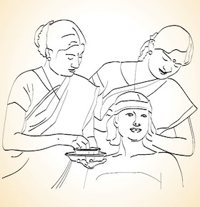

Thalapothichil |
|  |
|
In Thalapothichil, the person's scalp is completely applied with high value medicinal pastes. This enables the medicines
to penetrate faster into the brain cells. To start the treatment, the person sits on a chair, well relaxed. Selected medicinal
herbs, thoroughly ground and made into fine paste, is then thickly applied on to his scalp. The head is then covered up with
leaves, usually banana leaves, to form a perfect mask. This is done to allow the medicines to stay on and function well.
The mask remains on the person's head for almost 40 to 50 minutes giving wonderful relaxation to the mind. |